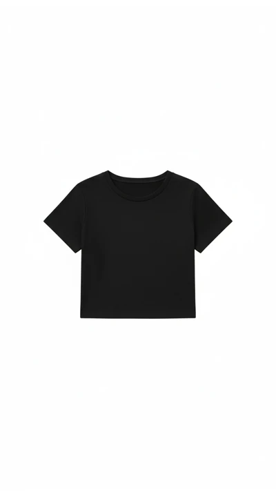
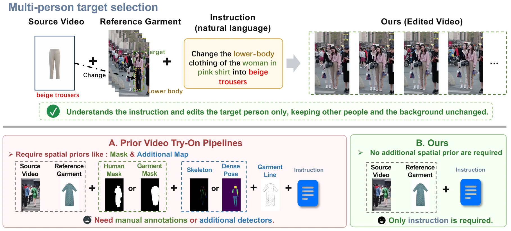
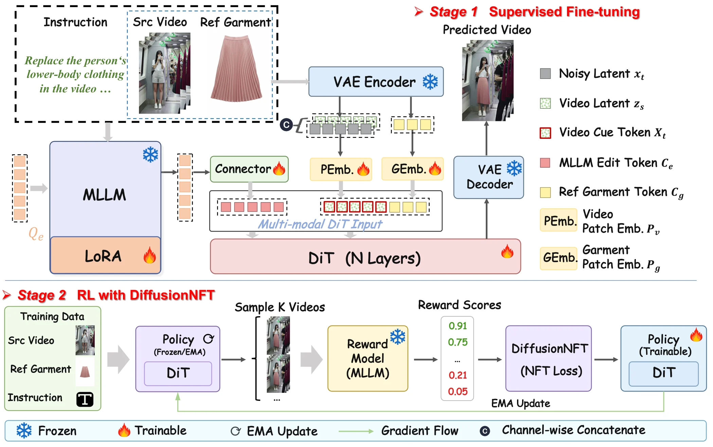
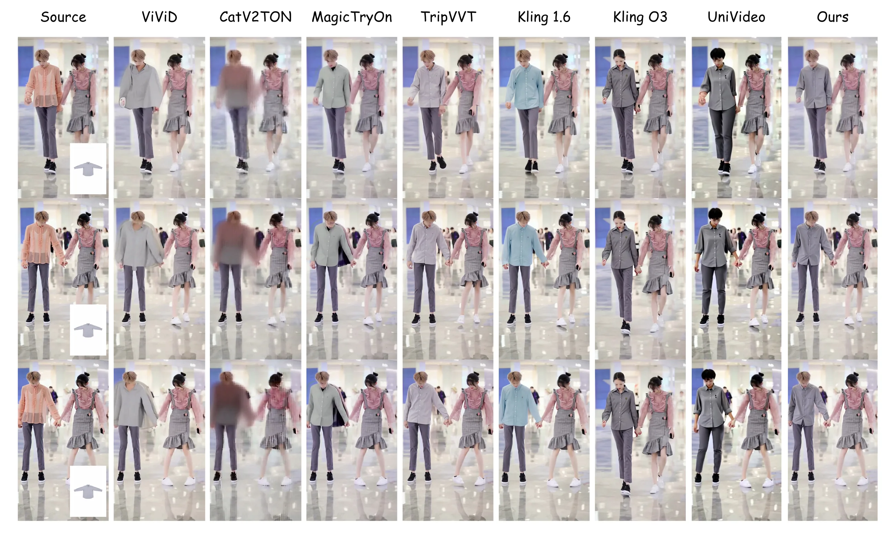
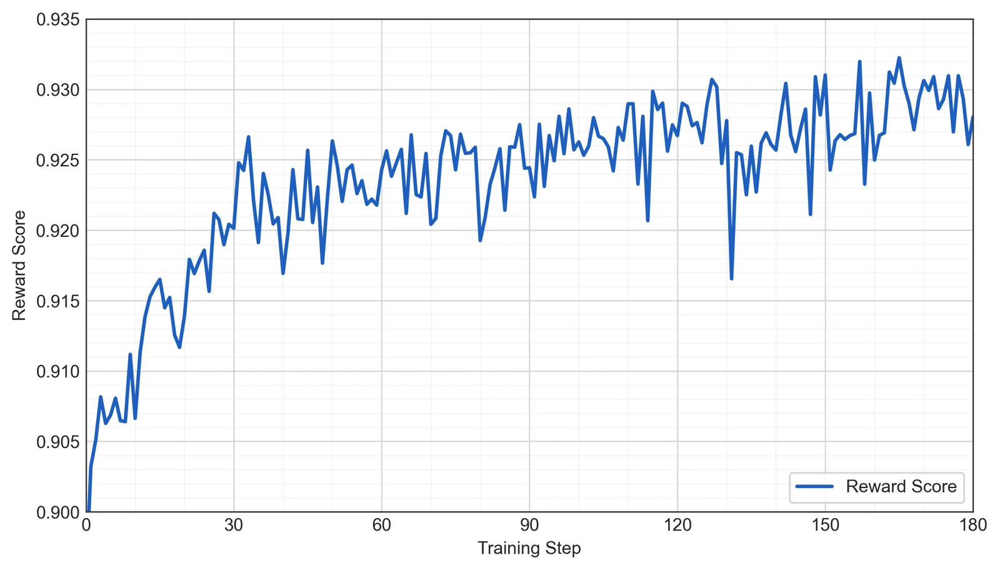
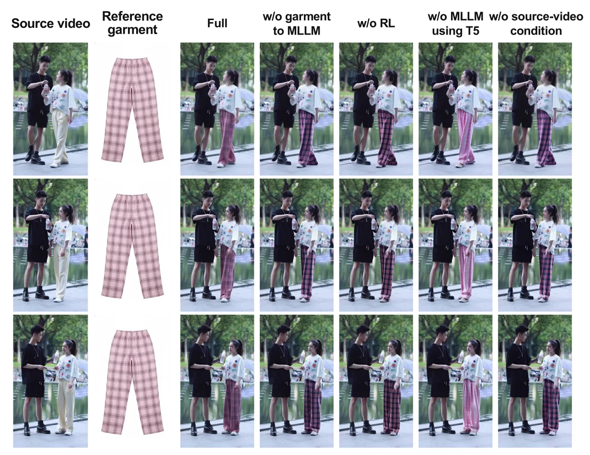

Many brittle intermediates
maskposeparsingcontour
Public preprint · 2026
Instruction-Driven Video Virtual Try-On
without Auxiliary Spatial Priors
Give the model a source video, a reference garment, and a natural-language instruction. It identifies what to edit, transfers garment details, and preserves motion and scene content—without masks, poses, or parsing maps.
Featured result · 06
In a crowded outdoor scene, the instruction identifies the woman in pink and replaces only her lower-body clothing. Other people, camera motion, and the surrounding street remain consistent throughout the edit.
Explore all supplementary results ↓The interface
One instruction resolves the edit target and scope. Select an example to inspect the same three-input workflow across different garments and motions.

“Replace the woman’s upper-body clothing with the reference garment.”

Why InstructVVT
Existing video try-on systems often turn rich visual context into a chain of handcrafted controls. When a detector fails, the editor inherits that error. InstructVVT recovers editing control from the original inputs instead.
Abstract
Video virtual try-on requires precise garment replacement while preserving the source video’s spatial structure and temporal dynamics. Existing methods often rely on handcrafted spatial priors that can fail in unconstrained videos and discard useful context. InstructVVT instead operates on a source video, a reference garment, and a natural-language instruction. An MLLM produces semantic edit tokens for target disambiguation and structural preservation, while a lightweight garment pathway injects fine-grained visual details. A tailored try-on reward and DiffusionNFT post-training further align the generator with human preferences. Across ViViD-S and TripVVT-Bench, the model improves garment fidelity, source preservation, and temporal consistency without inference-time spatial priors.
The method
Three complementary conditioning paths tell the DiT what to edit, what the garment should look like, and what in the source video must remain stable.
Jointly interpret source frames, garment, and instruction to resolve the target and editing scope.
Inject fine-grained appearance cues—texture, pattern, shape, and visible design details—into the generator.
Anchor human motion, camera behavior, scene layout, and content outside the edited garment region.

Experiments
InstructVVT is evaluated on ViViD-S and TripVVT-Bench against open-source video try-on systems and general instruction-guided video editors.
user preference on TripVVT-Bench
CLIP-I on TripVVT-Bench ↑
SSIM on TripVVT-Bench ↑
LPIPS on TripVVT-Bench ↓

Reward alignment
Reconstruction alone cannot express whether the right person was edited, garment details survived, or the background stayed untouched. Our try-on-specific reward evaluates those qualities jointly and guides DiffusionNFT post-training.

Analysis
Removing garment-aware semantics, reward alignment, or source conditioning produces a distinct and interpretable failure mode.

Supplementary videos
Browse additional comparisons on TripVVT-Bench and ViViD-S, together with the qualitative ablation and failure-case analysis.
Citation
arXiv:2608.14070 [cs.CV]
@article{shao2026instructvvt,
title = {InstructVVT: Instruction-Driven Video Virtual Try-On
without Auxiliary Spatial Priors},
author = {Shao, Dingbao and Wu, Song and Chen, Xinyu and Wang, Qian
and Li, Jiahang and Jiang, Kuai and Lin, Jiang and Liu, Yuhang
and Chen, Ziyu and Li, Duo and Hu, Jiaxin and Gu, Shengrong
and Tang, Ziheng and Liu, Rongrong and Peng, Yanlun and Li, Liang
and Feng, Junlan and Jin, Lujia and Zhang, Ting and Yang, Jian
and Yi, Zili},
journal = {arXiv preprint arXiv:2608.14070},
year = {2026},
url = {https://arxiv.org/abs/2608.14070}
}